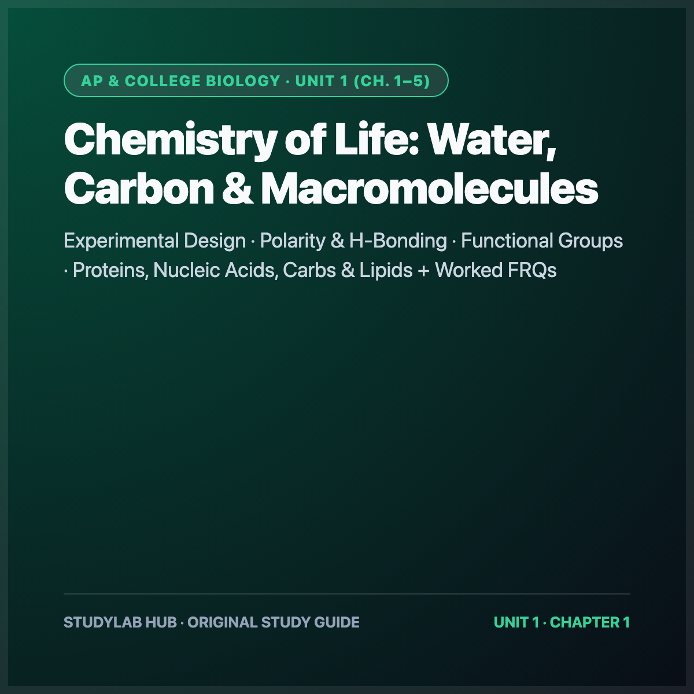

AP & College Biology · Unit 1 (Ch. 1–5)
Unit 1: Chemistry of Life (Water, Carbon & Macromolecules)
Experimental design, polarity & H-bonding, functional groups, and all 4 macromolecule classes.
- Ch. 1 Experimental Design: Null ($H_0$) vs. alternative hypotheses, controls & $\pm 2\text{ SE}_{\bar{x}}$ error bars
- Ch. 2 Water & H-Bonding: Cohesion, adhesion, specific heat & evaporative cooling
- Ch. 3–5 Macromolecules: Carbs, lipids, proteins ($1^\circ$–$4^\circ$ folding) & DNA/RNA directionality